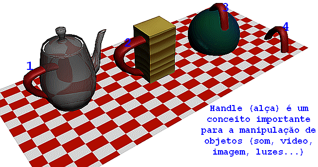

Curso completo de DarkGdk
Gameprog - Escola de programação de jogos digitais
Contato: gameprog.br@gmail.com
Fase 5.1
05.1 Segurando objetos pela alça
05.1 Conceito de handle

Estamos para ingressar na parte divertida da DarkGdk. Nos próximos capítulos
vamos aprender a lidar com som, video e imagem (não necessariamemente nessa
ordem) e logo após vamos lidar com luzes, câmeras e objetos 3D.
Tem um aspecto comum entre todos esses objetos citados que é o conceito de
handle traduzido como alça. O handle é um número do tipo int utilizado para
se referir ao objeto que queremos manipular, em outras palavras, seria o
número de identidade desse objeto pelo qual é referido e assim manipulado.
Esse conceito de handle é comum em programação Windows. Nos bastidores do sistema
e das suas aplicações tudo funciona com um handle que identifica botões, janelas
e todos os controles do Windows. Tudo tem uma identidade numérica incluindo a
própria aplicação.